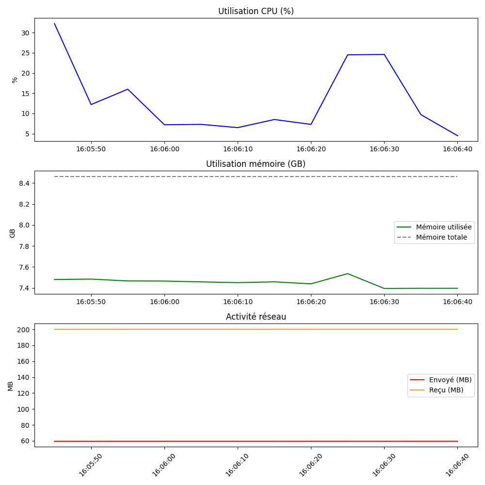

Mis à jour : 2025-06-05 16:06:46
=== CPU Usage ===
Core 0: [##------------------] 12.5%
Core 1: [##------------------] 13.2%
Core 2: [##------------------] 14.3%
Core 3: [#-------------------] 5.8%
Core 4: [#-------------------] 8.2%
Core 5: [#-------------------] 6.3%
Core 6: [##------------------] 11.6%
Core 7: [#-------------------] 9.3%
Total: [##------------------] 10.2%
=== Memory ===
Total: 8.46 GB
Used: 7.43 GB
Free: 1.03 GB
=== Disk Usage ===
C:\ (C:\) - Total: 510.63 GB, Used: 373.54 GB, Free: 137.08 GB
=== Network I/O ===
Bytes Sent: 59.47 MB
Bytes Received: 200.14 MB
Packets Sent: 186390
Packets Received: 219832
=== Network per Interface ===
Ethernet - Sent: 0.00 MB, Received: 0.00 MB
HMA! Pro VPN - Sent: 0.00 MB, Received: 0.00 MB
Ethernet 4 - Sent: 0.00 MB, Received: 0.00 MB
Connexion au réseau local* 1 - Sent: 0.00 MB, Received: 0.00 MB
Connexion au réseau local* 2 - Sent: 0.00 MB, Received: 0.00 MB
Wi-Fi - Sent: 36.86 MB, Received: 200.13 MB
Loopback Pseudo-Interface 1 - Sent: 0.00 MB, Received: 0.00 MB
Cellulaire - Sent: 0.00 MB, Received: 0.00 MB
vEthernet (Default Switch) - Sent: 20.82 MB, Received: 0.00 MB
vEthernet (WSL (Hyper-V firewall)) - Sent: 1.79 MB, Received: 0.01 MB
Press Ctrl+C to exit...